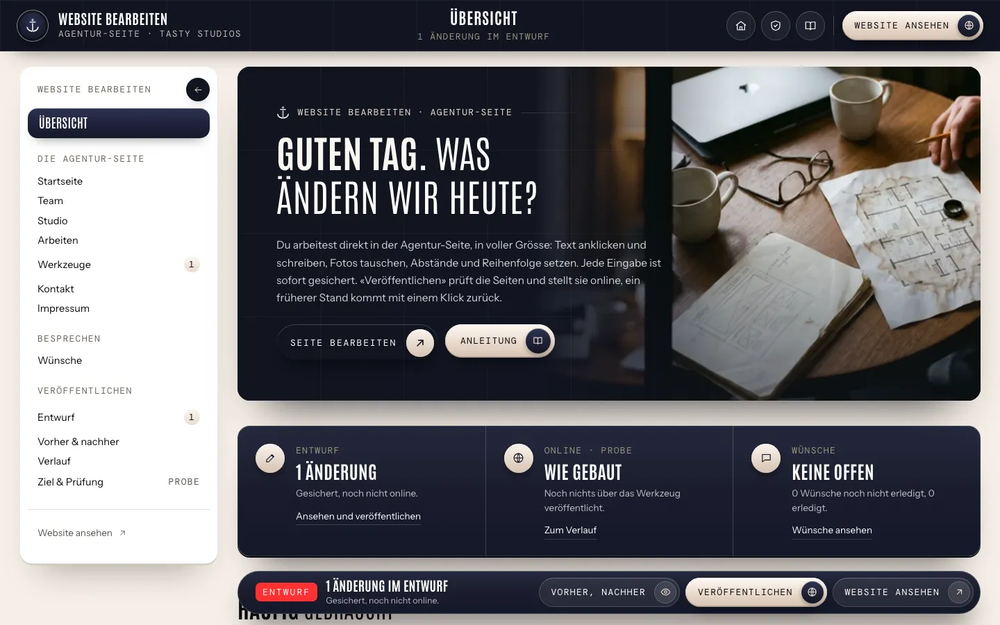
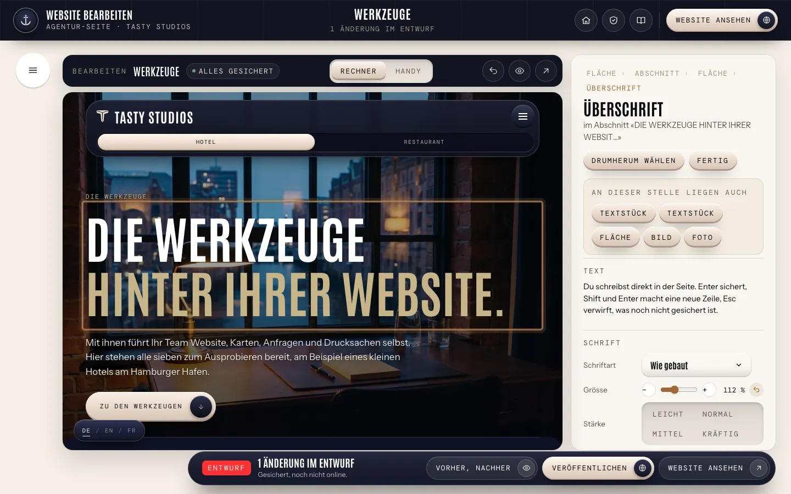
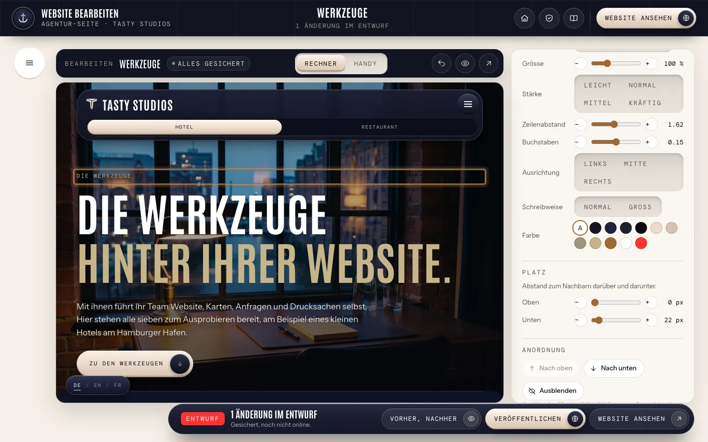
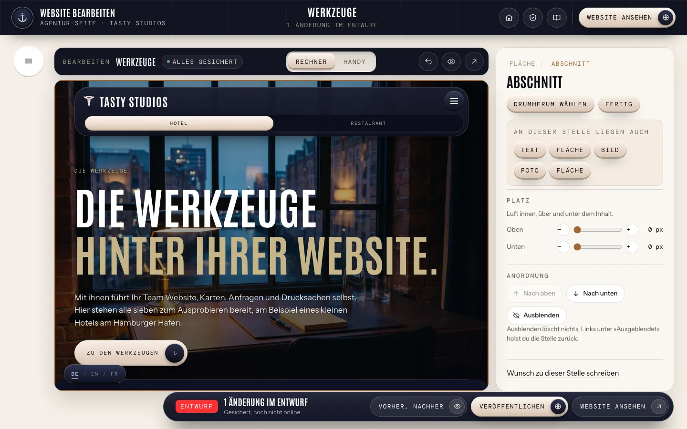
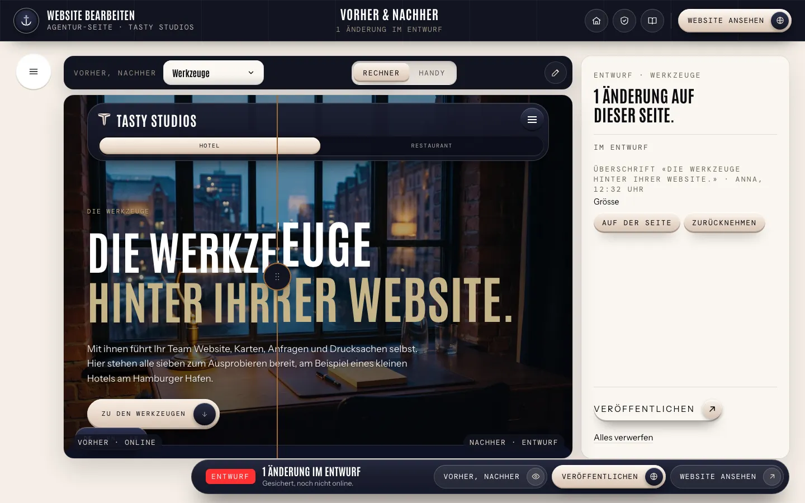
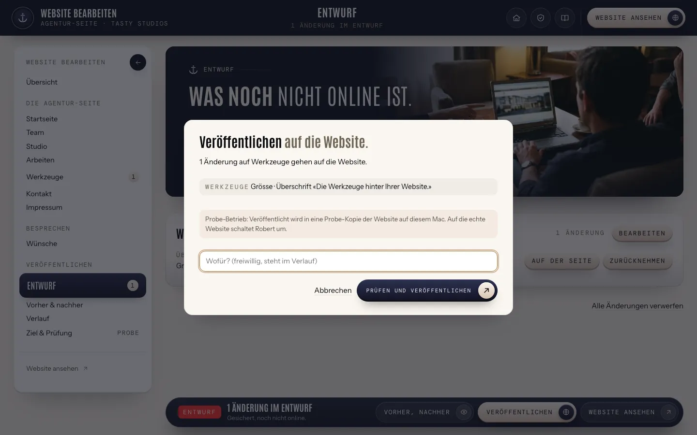
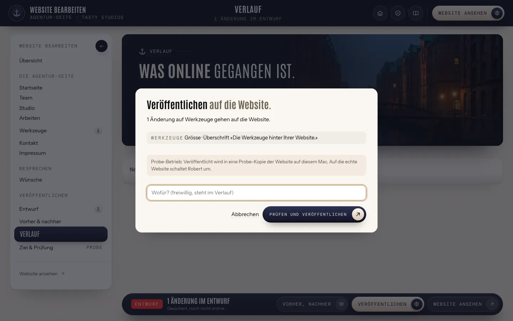
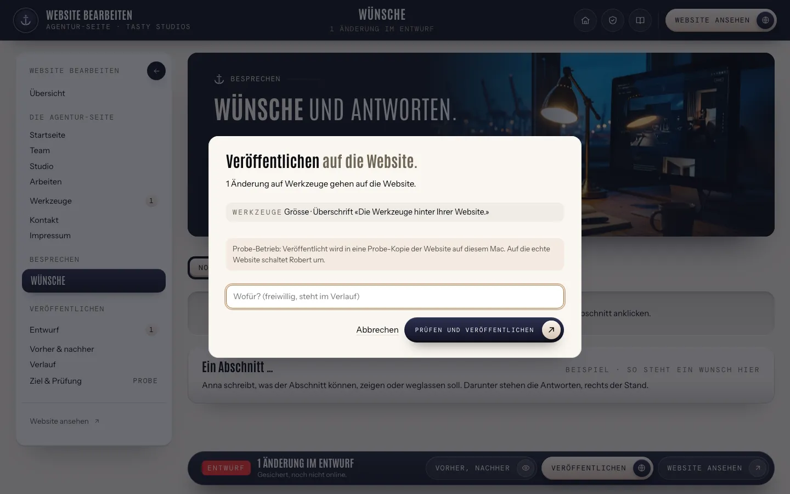

Website bearbeiten
So änderst du die Agentur-Seite.
Mit «Website bearbeiten» arbeitest du direkt in der Seite von Tasty Studios, in voller Grösse: Text anklicken und schreiben, Fotos tauschen, Abstände und Reihenfolge setzen. Jede Eingabe ist sofort gesichert. «Veröffentlichen» prüft die Seiten und stellt sie online, ein früherer Stand kommt mit einem Klick zurück.
1
Die Übersicht
Oben siehst du, ob etwas im Entwurf liegt, wann zuletzt veröffentlicht wurde und wie viele Wünsche offen sind. Darunter «Häufig gebraucht» und jede Seite der Agentur-Seite mit einem Foto.
Links im Rand stehen dieselben Seiten, dazu «Wünsche», «Entwurf», «Vorher & nachher», «Verlauf» und «Ziel & Prüfung». Am Handy öffnet «Bereiche» oben den Rand.

2
Text schreiben
Seite wählen, zum Beispiel «Werkzeuge». Die Seite steht in voller Grösse, so wie Besucher sie sehen. Fährst du über eine Stelle, zeigt ein Schild, was sie ist. Ein Klick auf einen Text, und du schreibst direkt hinein.
Enter sichert, Shift und Enter macht eine neue Zeile, Esc verwirft, was noch nicht gesichert ist. Oben steht immer der Stand: «Schreibt …», «Gesichert 12:04 Uhr» oder rot «Nicht gesichert».

3
Schrift und Farbe
Rechts stehen die Einstellungen der gewählten Stelle: Schriftart, Grösse, Stärke, Zeilen- und Buchstabenabstand, Ausrichtung, Schreibweise und eine Farbe aus der Marke. Die Seite zeigt jede Bewegung sofort.
Der runde Pfeil neben einem Regler holt den gebauten Wert zurück. Auf dem Handy wird alles anteilig mitgeführt.

4
Foto tauschen
Ein Foto anklicken, auch eines, über dem Text liegt: daneben klicken, wo keine Buchstaben sind. Rechts «Foto tauschen» öffnet alle Fotos der Website mit Suche, oder du lädst ein eigenes hoch (mindestens 900 Pixel breit).
Ein Klick ins kleine Foto setzt den Punkt, der auf jeder Bildschirmbreite zu sehen bleibt. Darunter steht die Beschreibung für Google.

5
Abstände, Reihenfolge, ausblenden
Ein zweiter Klick auf dieselbe Stelle wählt das Drumherum, bis zum ganzen Abschnitt. Der Weg steht oben rechts und lässt sich anklicken.
Unter «Platz» ziehst du die Abstände oben und unten, unter «Anordnung» schiebst du nach oben oder unten oder blendest aus. Ausblenden löscht nichts, «Wieder zeigen» holt die Stelle zurück.

6
Vorher, nachher
Links die Seite, wie sie online steht, rechts dein Entwurf. Den Schieber in der Mitte ziehst du über die Seite, beide scrollen zusammen. Rechts steht jede Änderung dieser Seite, einzeln zurücknehmbar.
Cmd und Z am Mac nimmt die letzte Änderung zurück, auch der runde Pfeil oben über der Seite.

7
Veröffentlichen
«Veröffentlichen» unten zeigt, was online geht. Dann prüft das Werkzeug jede geänderte Seite bei Rechner- und Handybreite: läuft Text über den Rand, lädt jedes Foto, ist keine Überschrift leer. Passt etwas nicht, zeigt es die Stelle und veröffentlicht nicht.
Ist alles gut, legt es die Seiten in die Website und lädt sie danach von dort, bis sie angekommen sind: «Online, geprüft 12:06 Uhr».

8
Verlauf und Zurückholen
Jede Veröffentlichung steht mit Bild, wer, wann und welche Änderungen. «Zurück zu diesem Stand» holt einen früheren Stand zurück; das ist selbst eine Veröffentlichung, der heutige Stand bleibt im Verlauf.

9
Wünsche
Was mehr ist als Text, Foto und Abstand, schreibst du als Wunsch, direkt an der Stelle («Wunsch zu dieser Stelle schreiben») oder unter «Wünsche». Robert antwortet und setzt den Stand: offen, besprochen, erledigt.

10
Wenn etwas nicht klappt
Jede Meldung trägt den Knopf «Was tun?». Er führt zur Prüfung: Sie läuft auch dann, wenn das Werkzeug selbst nicht startet, sagt, was los ist, und was zu tun ist. Fehlt kurz die Verbindung, warten deine Eingaben im Werkzeug und werden gesichert, sobald sie wieder steht.